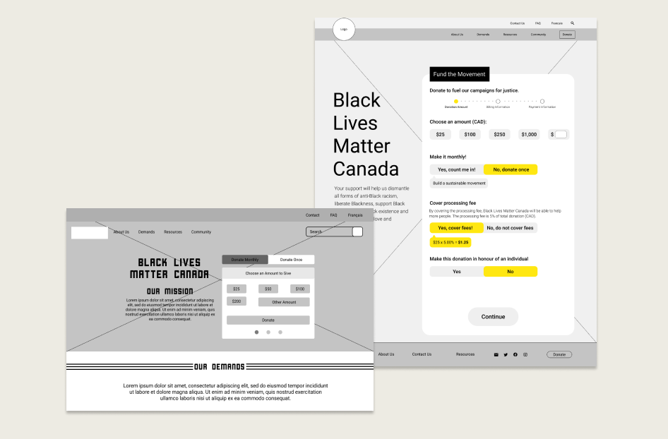

SOLUTIONS
We know that many users are coming to the site to better understand what the movement stands for, and it’s important that that information is clearly displayed to users to convey the feeling of transparency a non-profit organization should have. Making the mission clear on the homepage helps establish what Black Lives Matter is about.
In conducting a card sorting for the main navigation, we were able to create a user-friendly navigation. We simplified the navigation items in a more cohesive manner, such as combining the "Defund the Police- Demands" and "Demands" pages into one, all while still highlighting the importance of defunding the police. Since the site is content heavy, we also threw in that search bar for users to freely search and resources they may need.

When exploring the other chapters of the Black Lives Matter movement, we noticed that BLM Canada was not consistent with the brand. To make certain information pop, we added the bold, signature yellow and the Cornerstone font found within the other chapters.
We made sure all of the design elements were consistent with each other on each site.